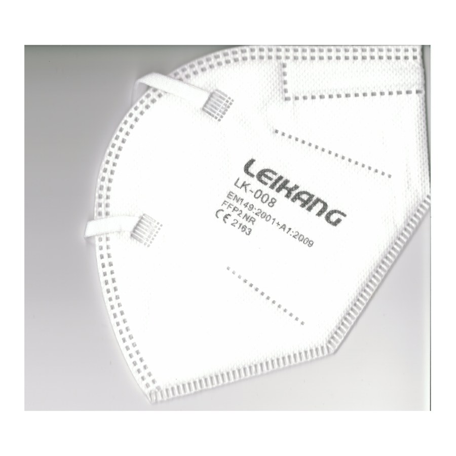
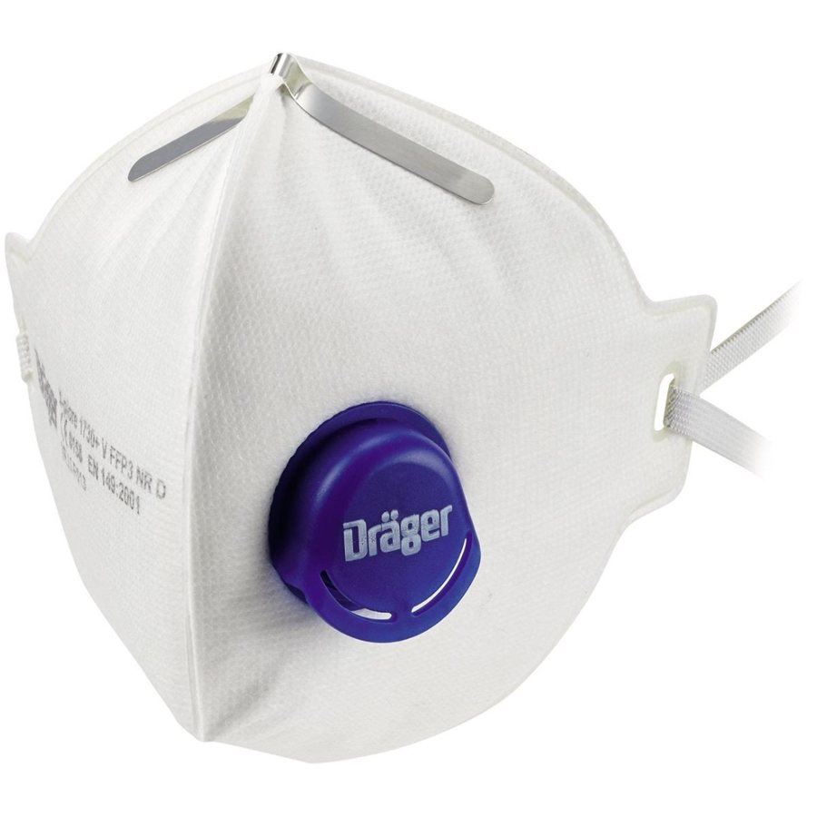
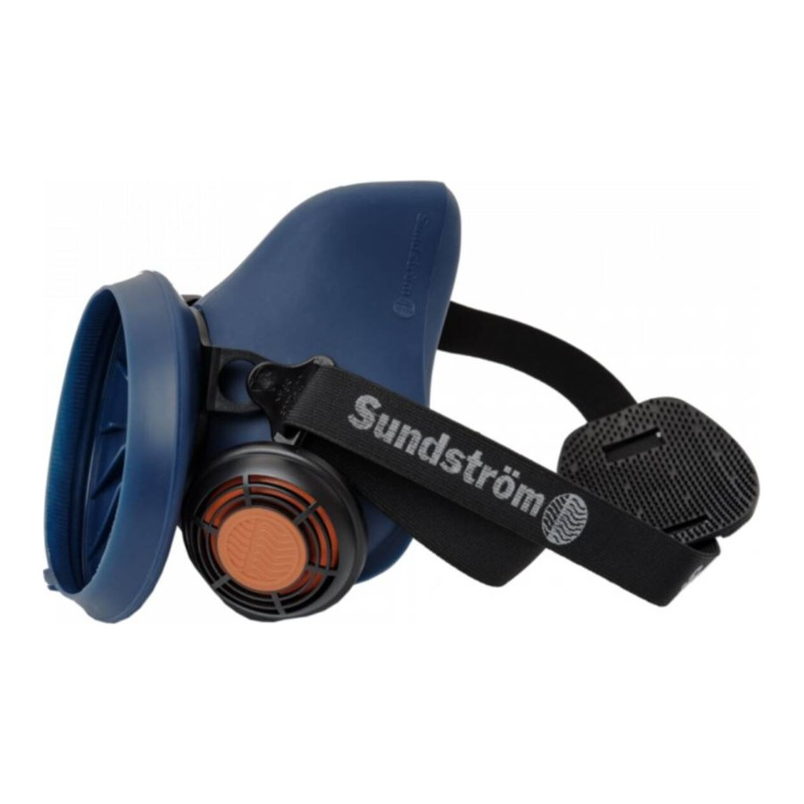
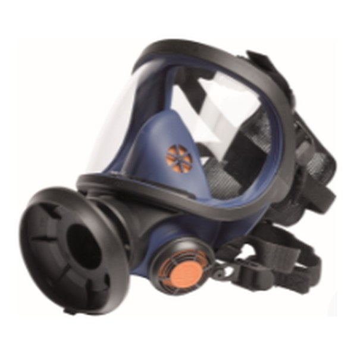
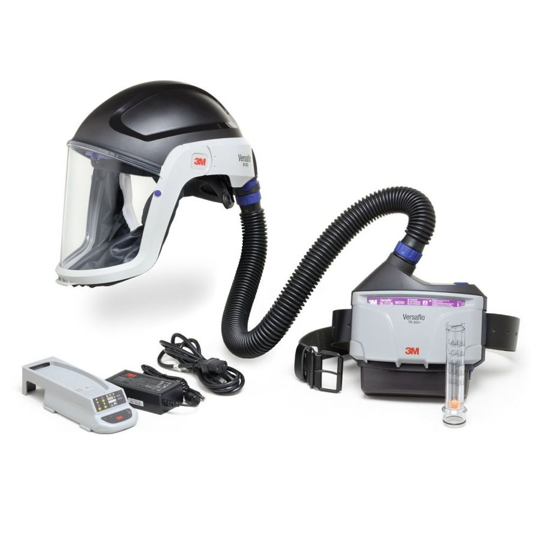
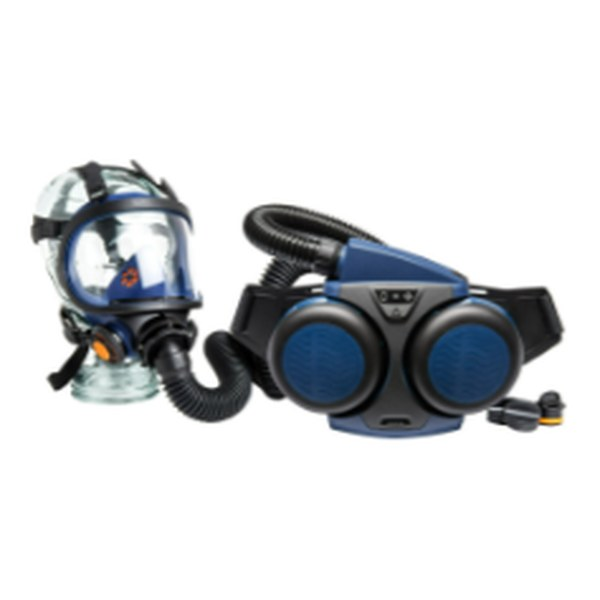
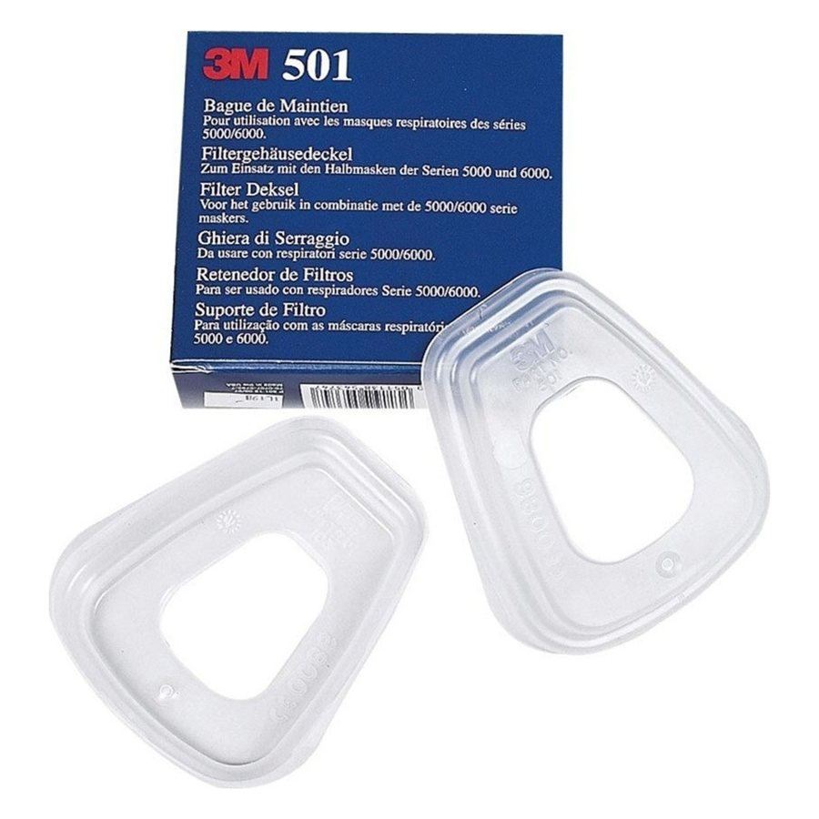
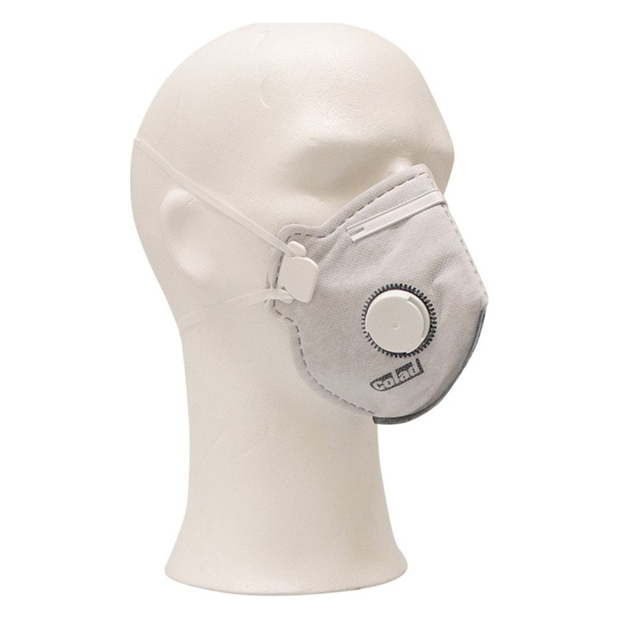
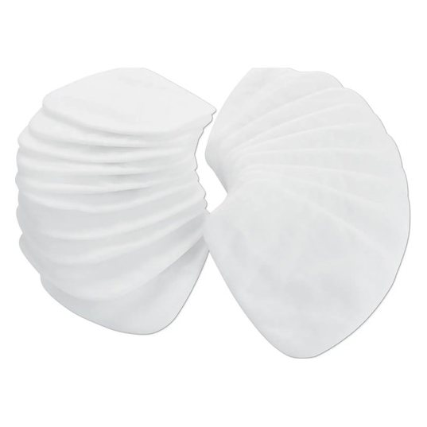
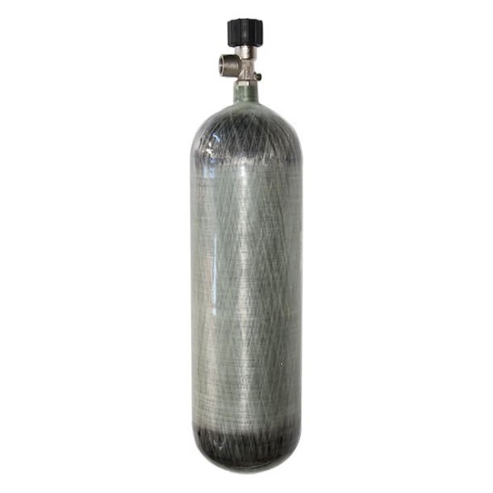

Start / Atemschutz / Kombinationsfilter ABEK1-P3 (Gas- und Partikelfilter, Paar)

Abbildung ähnlich – zeigt den Produkttyp.
Atemschutz
Kombinationsfilter ABEK1-P3 (Gas- und Partikelfilter, Paar)
Professionelle Anwender in Deutschland erwarten die Kennzeichnung nach EN 14387 mit Klassenangabe, CE mit NB-Nummer, Herstell- und Verfallsdatum sowie einen betrieblichen Wechselplan, da die Gebrauchsdauer von der Schadstoffkonzentration abhängt. Als PSA der Kategorie III ist die EU-Baumusterprüfbescheinigung zwingend; Gasfilter Typ A gelten nicht für Stoffe mit Siedepunkt unter 65 °C.
Technische Daten
| Gasfilter A | organisch / organic, Kp > 65 °C, Klasse / class 1 |
|---|---|
| Gasfilter B / E / K | anorganisch / sauer / NH3, Klasse / class 1 |
| Partikelanteil | P3 R, ≥ 99,95 % |
| Farbcodierung | Braun/Grau/Gelb/Grün + Weiß / brown/grey/yellow/green + white |
| Packungseinheit | 2 Stück / pcs (Paar / pair) |
| Zolltarifnummer (HS) | 90200090 |
EU-Normen und Vorschriften
EN 14387:2021Gas- und Kombinationsfilter – Anforderungen, Prüfung, KennzeichnungEN 143:2021Partikelfilter (P3-Anteil)EU 2016/425PSA-Verordnung, Kategorie III, CE mit NB-NummerEN 148-1:1999DGUV Regel 112-190Benutzung von Atemschutzgeräten (Gasfilter-Wechselplan)
Weitere Produkte dieser Kategorie

FFP2-Atemschutzmaske (Einweg)Filtrierende Halbmaske FFP2 NR D für Staub-, Holz- und Feinstaubarbeiten auf der Baustelle – wirtschaftlich, leicht und in Einzelverpackung sofort einsatzbereit.

FFP3-Atemschutzmaske mit Ventil (Einweg)Filtrierende Halbmaske FFP3 NR D mit Ausatemventil für kurze Staub- und Faserarbeiten – hohe Abscheideleistung, sofort einsatzbereit.

Halbmaske mit P3-Filtern (Set)Wiederverwendbare Silikon-Halbmaske nach EN 140 mit zwei P3-Partikelfiltern für Abbruch-, Schleif- und Sanierungsarbeiten.

Vollmaske mit P3-FilternSilikon-Vollmaske nach EN 136 mit Panoramavisier und P3-Filtern für Asbest- und Schadstoffsanierung mit Augenschutz.

Gebläse-Atemschutz mit Haube/Helm (PAPR)Akkubetriebenes Gebläse-Atemschutzgerät mit Haube oder Helm für lange Schichten bei Asbest-, Schimmel- und Feinstaubarbeiten – kein Dichtsitz an der Haut nötig, bartverträglich.

PAPR-Set (Gebläse-Atemschutz)Akkubetriebenes Gebläse-Atemschutzgerät mit P3-Filtern für lange Schichten bei Asbest- und Feinstaubarbeiten ohne Atemwiderstand.

P3-Partikelfilter (Wechselfilter, Paar)

Kombinationsfilter A2-P3 R D (Gas- und Partikelfilter für Lackierer, Bajonett, Paar)

Partikel-Vorfilter-Set mit Filterdeckeln (Vlies, für Bajonettfilter)Vorfilter-Vlies mit Filterdeckel für Bajonett-Partikelfilter: fängt Grobstaub und Spritznebel ab und verlängert die Standzeit des P3-Filters.

FFP2-Atemschutzmaske mit Aktivkohle (Einweg, mit oder ohne Ausatemventil)Einweg-FFP2-Maske mit Aktivkohlelage gegen Geruchsbelästigung, etwa bei Lack- und Schweißarbeiten; Partikelschutz nach EN 149.

Aufbewahrungsbox für Atemschutz-Halbmasken (EVA-Hartschalen-Etui mit Reißverschluss)Formgepresstes EVA-Etui mit wasserabweisendem Nylonbezug, Frotteefutter und Schaumeinlage für Mehrweg-Halbmaske und Filter.

FFP1-Atemschutzmaske (Einweg)Einweg-Atemschutzmaske FFP1 nach EN 149 aus Vlies für Arbeiten mit ungiftigen Stäuben und Aerosolen.

Partikelfilter P2 R (Wechselfilter für Halbmasken, EN 143)

Frischluft-Schlauchgerät mit VollmaskeVollmaske mit Frischluftzufuhr über Schlauch für Arbeiten in staubiger oder belasteter Luft.

Pressluftatmer 6,8 L (Composite-Flasche)Umluftunabhängiges Atemschutzgerät mit 6,8-L-Kohlefaserflasche, Lungenautomat und Warnpfeife.

Atemluftflasche 9 L Kohlefaser (Ersatz)Leere Hochdruck-Ersatzflasche aus Kohlefaser für Pressluftatmer.